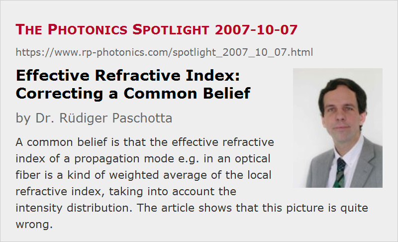

Effective Refractive Index: Correcting a Common Belief
Posted on 2007-10-07 (revised on 2011-03-29) as a part of the Photonics Spotlight (available as e-mail newsletter!)
Permanent link: https://www.rp-photonics.com/spotlight_2007_10_07.html
Author: Dr. Rüdiger Paschotta, RP Photonics Consulting GmbH
Abstract: A common belief is that the effective refractive index of a propagation mode e.g. in an optical fiber is a kind of weighted average of the local refractive index, taking into account the intensity distribution. The article shows that this picture is quite wrong.

Ref.: encyclopedia articles on effective refractive index
While the refractive index of a homogeneous transparent medium is based on a rather simple concept, the effective refractive index in a waveguide such as an optical fiber is somewhat more difficult to understand – and is in fact often misunderstood.
In a usual single-mode fiber, the guided propagation mode extends significantly beyond the region of the fiber core, and the effective refractive index is found to have a value somewhat between the refractive indices of core and cladding. In a multimode fiber, higher-order modes extend more into the cladding, and have smaller effective indices. These facts often make people believe that the effective index is a kind of weighted average of the local refractive index, according to the propagation of some parts of the total optical power in the core and in the cladding, respectively. This picture, however, is quite wrong.
First consider the definition of the effective index neff: the β value of some fiber mode is neff times the vacuum wavenumber. So that definition targets the phase change per unit length along the fiber axis, not the intensity distribution.
Still one might guess that there is some relation to the intensity distribution as well, but a simple example shows that this can hardly be true. Consider a step-index multimode fiber with high numerical aperture (NA), i.e. with a very large index step. In that case, all fiber modes except for the highest order ones propagate essentially only in the core, so that from this one might expect the effective index of all modes to closely match the core index. But this is not the case: higher-order modes still have significantly lower effective indices. They experience a smaller phase shift per unit length, even though they propagate in the same material. How can that be? Essentially it is the fact that higher-order modes contain more pronounced plane wave components (spatial Fourier components) with a larger angular offset from the fiber axis. So it is here in some sense a matter of different propagation directions, not of different materials. Of course, both effects are relevant in fibers with lower NA.
The figure below shows an example case: a mode of a multimode fiber has been selected, which is close to its cut-off. At this point, the effective refractive index can be calculated to be very close to the cladding index – its difference to the cladding index is only 0.4% of the difference between core and cladding index. The mode field indeed penetrates further into the cladding than other modes, which are not as close to their cut-off. Nevertheless, 68% of the power still propagate within the core.
One detail can still be confusing: shouldn't modes with stronger off-axis field components experience a larger rather than a smaller phase shift per unit length, given that they somehow have to travel a larger distance? No, that is actually not true: when the k vector has some angle to the fiber axis, its projection to the fiber axis becomes smaller, reducing the phase changes in that direction. This is somewhat reminiscent of a phenomenon discussed in an earlier spotlight article, where that aspect has been discussed in some detail.
This article is a posting of the Photonics Spotlight, authored by Dr. Rüdiger Paschotta. You may link to this page and cite it, because its location is permanent. See also the RP Photonics Encyclopedia.
Note that you can also receive the articles in the form of a newsletter or with an RSS feed.
Questions and Comments from Users
Here you can submit questions and comments. As far as they get accepted by the author, they will appear above this paragraph together with the author’s answer. The author will decide on acceptance based on certain criteria. Essentially, the issue must be of sufficiently broad interest.
Please do not enter personal data here; we would otherwise delete it soon. (See also our privacy declaration.) If you wish to receive personal feedback or consultancy from the author, please contact him e.g. via e-mail.
By submitting the information, you give your consent to the potential publication of your inputs on our website according to our rules. (If you later retract your consent, we will delete those inputs.) As your inputs are first reviewed by the author, they may be published with some delay.
|  |
If you like this page, please share the link with your friends and colleagues, e.g. via social media:
These sharing buttons are implemented in a privacy-friendly way!